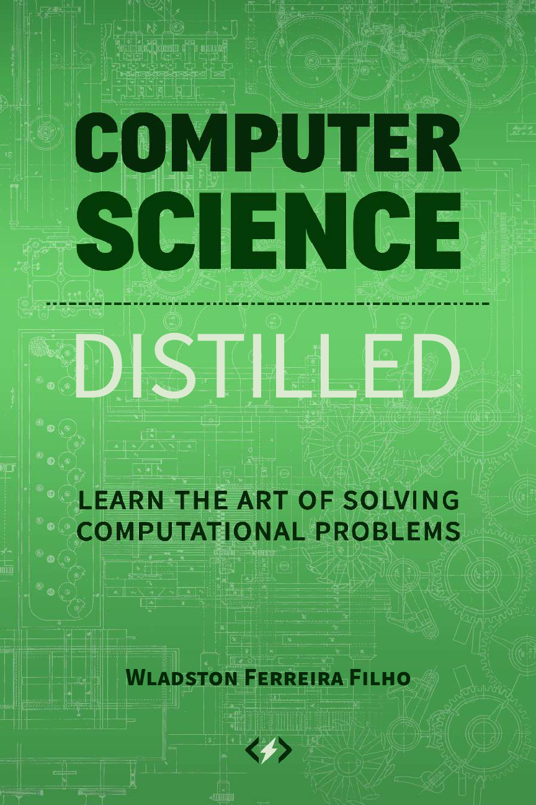
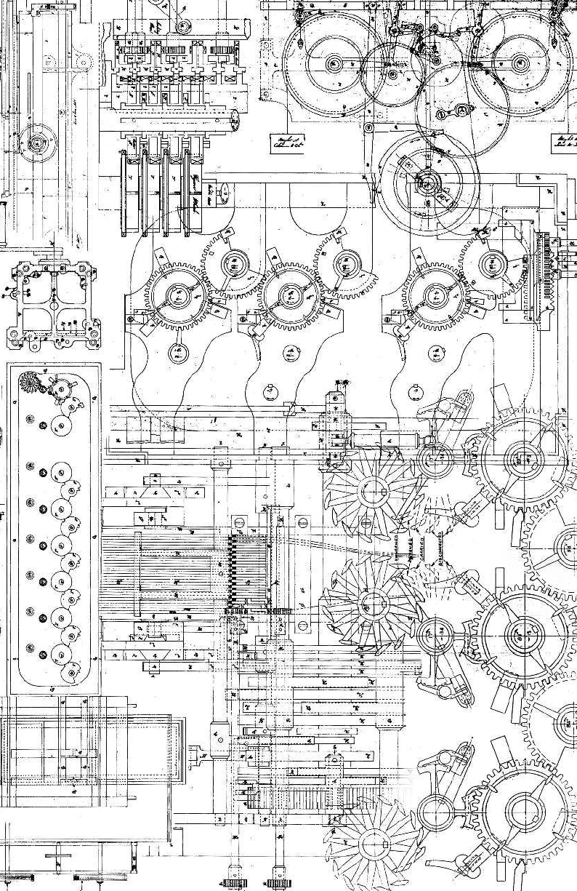

©2017 Wladston Viana Ferreira Filho
All rights reserved.
Edited by Raimondo Pictet.
Published by
No part of this publication may be reproduced, stored in a re-
trieval system or transmitted in any form or by any means,
electronic, mechanical, photocopying, recording or other-
wise, without permission from the publisher, except for brief
quotations embodied in articles or reviews.
While every precaution has been taken in the preparation of
this book, the publisher and the author assume no responsi-
bility for errors or omissions, or for damages resulting from
the use of the information contained herein.
Publisher’s Cataloging-in-Publication Data
Ferreira Filho, Wladston.
Computer science distilled: learn the art of solving computational
problems / Wladston Viana Ferreira Filho. — 1st ed.
x, 168 p. : il.
ISBN 978-0-9973160-0-1
eISBN 978-0-9973160-1-8
1. Computer algorithms. 2. Computer programming. 3. Computer
science. 4. Data structures (Computer science). I. Title.
004 – dc22 2016909247
First Edition, February 2017.
Friends are the family we choose for ourselves. This book is
dedicated to my friends Rômulo, Léo, Moto and Chris, who
kept pushing me to “finish the damn book already”.
I know that two & two make four—and should be
glad to prove it too if I could—though I must say if
by any sort of process I could convert 2 & 2 into five
it would give me much greater pleasure.
1813 letter to his future wife Annabella.
Their daughter Ada Lovelace was the first programmer.
. . . . . . . . . . . . . . . . . . . . . . . . . . . ix
. . . . . . . . . . . . . . . . . . . . . . . . . . 1
1.1 Ideas . . . . . . . . . . . . . . . . . . . . . . . . 1
1.2 Logic . . . . . . . . . . . . . . . . . . . . . . . . 5
1.3 Counting . . . . . . . . . . . . . . . . . . . . . . 13
1.4 Probability . . . . . . . . . . . . . . . . . . . . . 19
. . . . . . . . . . . . . . . . . . . . . . . 25
2.1 Counting Time . . . . . . . . . . . . . . . . . . . 27
2.2 The Big-O Notation . . . . . . . . . . . . . . . . 30
2.3 Exponentials . . . . . . . . . . . . . . . . . . . . 31
2.4 Counting Memory . . . . . . . . . . . . . . . . . 33
. . . . . . . . . . . . . . . . . . . . . . . . 35
3.1 Iteration . . . . . . . . . . . . . . . . . . . . . . 35
3.2 Recursion . . . . . . . . . . . . . . . . . . . . . 38
3.3 Brute Force . . . . . . . . . . . . . . . . . . . . 40
3.4 Backtracking . . . . . . . . . . . . . . . . . . . . 43
3.5 Heuristics . . . . . . . . . . . . . . . . . . . . . 46
3.6 Divide and Conquer . . . . . . . . . . . . . . . . 49
3.7 Dynamic Programming . . . . . . . . . . . . . . 55
3.8 Branch and Bound . . . . . . . . . . . . . . . . . 58
. . . . . . . . . . . . . . . . . . . . . . . . . . . 65
4.1 Abstract Data Types . . . . . . . . . . . . . . . . 67
4.2 Common Abstractions . . . . . . . . . . . . . . . 68
4.3 Structures . . . . . . . . . . . . . . . . . . . . . 72
. . . . . . . . . . . . . . . . . . . . . . . 85
5.1 Sorting . . . . . . . . . . . . . . . . . . . . . . . 86
5.2 Searching . . . . . . . . . . . . . . . . . . . . . 88
5.3 Graphs . . . . . . . . . . . . . . . . . . . . . . . 89
5.4 Operations Research . . . . . . . . . . . . . . . . 95
vii
. . . . . . . . . . . . . . . . . . . . . . . . 101
6.1 Relational . . . . . . . . . . . . . . . . . . . . . 102
6.2 Non-Relational . . . . . . . . . . . . . . . . . . . 110
6.3 Distributed . . . . . . . . . . . . . . . . . . . . . 115
6.4 Geographical . . . . . . . . . . . . . . . . . . . . 119
6.5 Serialization Formats . . . . . . . . . . . . . . . 120
. . . . . . . . . . . . . . . . . . . . . . . 123
7.1 Architecture . . . . . . . . . . . . . . . . . . . . 123
7.2 Compilers . . . . . . . . . . . . . . . . . . . . . 131
7.3 Memory Hierarchy . . . . . . . . . . . . . . . . . 138
. . . . . . . . . . . . . . . . . . . . . . 147
8.1 Linguistics . . . . . . . . . . . . . . . . . . . . . 147
8.2 Variables . . . . . . . . . . . . . . . . . . . . . . 150
8.3 Paradigms . . . . . . . . . . . . . . . . . . . . . 152
. . . . . . . . . . . . . . . . . . . . . . . . . 163
. . . . . . . . . . . . . . . . . . . . . . . . . . 165
I Numerical Bases . . . . . . . . . . . . . . . . . . 165
II Gauss’ trick . . . . . . . . . . . . . . . . . . . . 166
III Sets . . . . . . . . . . . . . . . . . . . . . . . . 167
IV Kadane’s Algorithm . . . . . . . . . . . . . . . . 168
viii
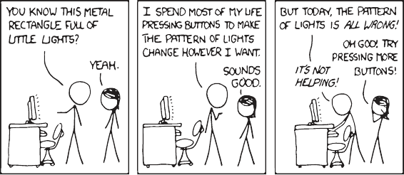
Everybody in this country should learn
to program a computer, because it
teaches you how to think.
As computers changed the world with their unprecedented power, a
new science flourished: computer science. It showed how computers
could be used to solve problems. It allowed us to push machines to
their full potential. And we achieved crazy, amazing things.
Computer science is everywhere, but it’s still taught as boring
theory. Many coders never even study it! However, computer sci-
ence is crucial to effective programming. Some friends of mine sim-
ply can’t find a good coder to hire. Computing power is abundant,
but people who can use it are scarce.
This is my humble attempt to help the world, by pushing you
to use computers efficiently. This book presents computer science
concepts in their plain distilled forms. I will keep academic formal-
ities to a minimum. Hopefully, computer science will stick to your
mind and improve your code.
ix
If you want to smash problems with efficient solutions, this book
is for you. Little programming experience is required. If you al-
ready wrote a few lines of code and recognize basic programming
statements like for and while, you’ll be OK. If not, online pro-
gramming courses
1
cover more than what’s required. You can do
one in a week, for free. For those who studied computer science,
this book is an excellent recap for consolidating your knowledge.
This book is for everyone. It’s about computational thinking. You’ll
learn to change problems into computable systems. You’ll use com-
putational thinking on everyday problems. Prefetching and caching
will streamline your packing. Parallelism will speed up your cook-
ing. Plus, your code will be awesome.
May the force be with you,
Wlad
1
http://code.energy/coding-
courses.
x
Computer science is not about machines, in
the same way that astronomy is not about
telescopes. There is an essential unity of
mathematics and computer science.
to break down problems into chunks
they can crunch. To do this, we need some math. Don’t
panic, it’s not rocket science—writing good code rarely
calls for complicated equations. This chapter is just a toolbox for
problem solving. You’ll learn to:
Model ideas into flowcharts and pseudocode,
Know right from wrong with logic,
Count stuff,
Calculate probabilities safely.
With this, you will have what it takes to translate your ideas into
computable solutions.
When you’re on a complex task, keep your brain at the top of
its game: dump all important stuff on paper. Our brains’ work-
ing memory easily overflows with facts and ideas. Writing every-
thing down is part of many organizing methods. There are several
ways to do it. We’ll first see how flowcharts are used to represent
processes. We’ll then learn how programmable processes can be
drafted in pseudocode. We’ll also try and model a simple problem
with math.
1
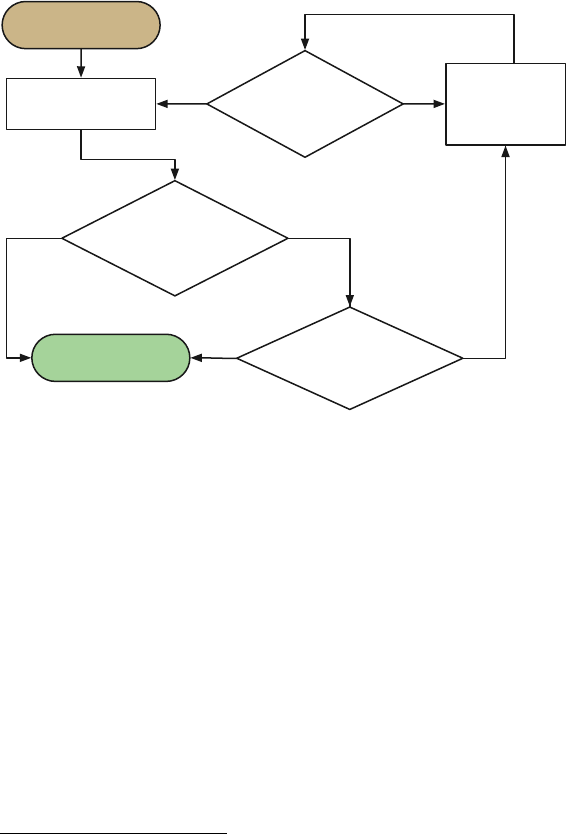
When Wikipedians discussed their collaboration process, they cre-
ated a flowchart that was updated as the debate progressed. Having
a picture of what was being proposed helped the discussion:
Previous page state
Edit the page
Was your edition
modified by others?
Do you agree with
the other person?
Discuss the
issue with the
other person
New page state
No
No
Yes
Yes
No
Do you accept that
modification?
Yes
Like the editing process above, computer code is essentially a pro-
cess. Programmers often use flowcharts for writing down comput-
ing processes. When doing so, you should follow these guidelines
1
for others to understand your flowcharts:
• Write states and instruction steps inside rectangles.
• Write decision steps, where the process may go different
ways, inside diamonds.
• Never mix an instruction step with a decision step.
• Connect sequential steps with arrows.
• Mark the start and end of the process.
1
There’s
even an ISO standard specifying precisely how software systems di-
agrams should be drawn, called UML: http://code.energy/UML.
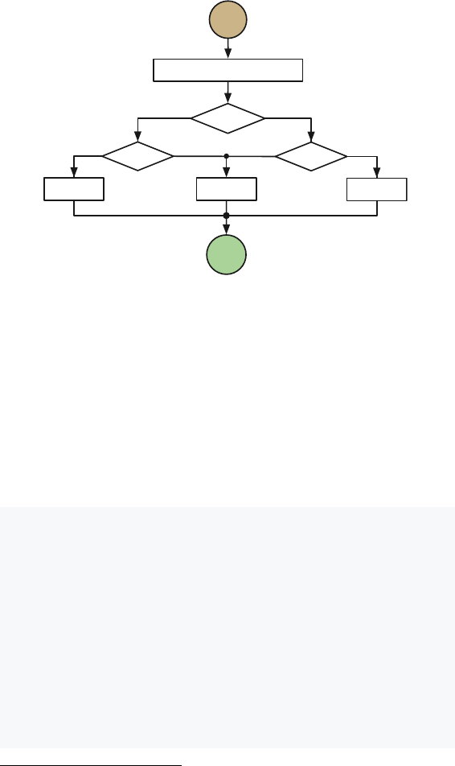
Let’s see how this works for finding the biggest of three numbers:
Start
Read numbers A, B, C
A > B?
A > C?
B > C?
Print B Print C
Print A
Stop
Yes
Yes
No
Yes
No
No
Just as flowcharts, pseudocode expresses computational processes.
Pseudocode is human-friendly code that cannot be understood by
a machine. The following example is the same as fig. 1.2. Take a
minute and test it out with some sample values of A, B, and C:
2
function maximumA, B, C
if A > B
if A > C
max ← A
else
max ← C
else
if B > C
max ← B
else
max ← C
print max
2
Here, ← is
the assignment operator: x ← reads x is set to 1.
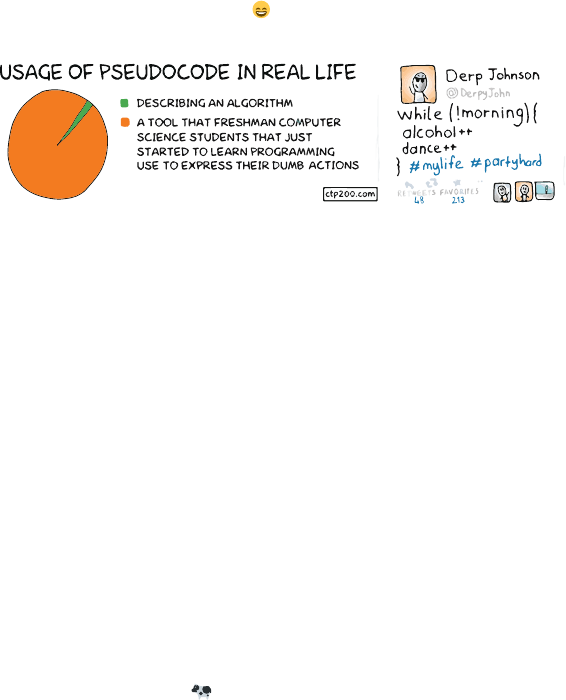
Notice how this example completely disregards the syntactic rules
of programming languages? When you write pseudocode, you can
even throw in some spoken language! Just as you use flowcharts
to compose general mind maps, let your creativity flow free when
writing pseudocode (fig. 1.3 ).
A model is a set of concepts that represents a problem and its char-
acteristics. It allows us to better reason and operate with the prob-
lem. Creating models is so important it’s taught in school. High
school math is (or should be) about modeling problems into num-
bers and equations, and applying tools on those to reach a solution.
Mathematically described models have a great advantage: they
can be adapted for computers using well established math tech-
niques. If your model has graphs, use graph theory. If it has equa-
tions, use algebra. Stand on the shoulders of giants who created
these tools. It will do the trick. Let’s see that in action in a typical
high school problem:
Your farm has two types of livestock.
You have 100 units of barbed wire to make a rectangular
fence for the animals, with a straight division for separating
them. How do you frame the fence in order to maximize
the pasture’s area?
Starting with what’s to be determined, w and l are the pasture’s
dimensions; w × l, the area. Maximizing it means using all the
barbed wire, so we relate w and l with 100:
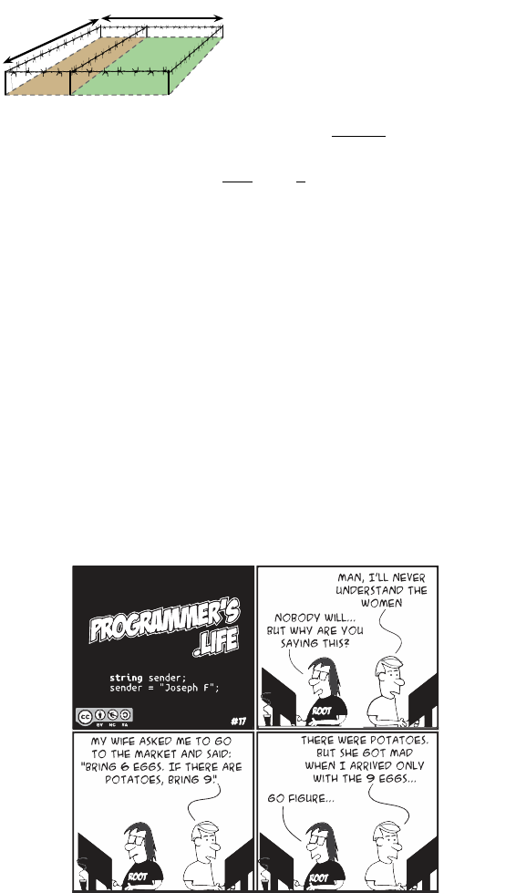
A = w × l,
100 = 2w +3l.
l
w
Pick w and l that maximize the area A.
Plugging l from the second equation (l =
100−2w
3
) into the first,
A =
100
3
w −
2
3
w
2
.
That’s a quadratic equation! Its maximum is easily found with the
high school quadratic formula. Quadratic equations are important
for you as a pressure cooking pot is valuable to cooks. They save
time. Quadratic equations help us solve many problems faster. Re-
member, your duty is to solve problems. A cook knows his tools,
you should know yours. You need mathematical modeling. And
you will need logic.
Coders work with logic so much it messes their minds. Still, many
coders don’t really learn logic and use it unknowingly. By learning
formal logic, we can deliberately use it to solve problems.
We will start playing around with logical statements using special
operators and special algebra. We’ll then learn to solve problems
with truth tables and see how computers rely on logic.
In common math, variables and operators (
+
,
×
,
−
,…) are used
to model numerical problems. In mathematical logic, variables and
operators represent the validity of things. They don’t express num-
bers, but True/False values. For instance, the validity of the ex-
pression “if the pool is warm, I’ll swim” is based on the validity of
two things, which can be mapped to logical variables A and B:
A : The pool is warm.
B : I swim.
They’re either True or False.
3
A = True means a warm pool;
B = False means no swimming. B can’t be half-true, because
I can’t half swim. Dependency between variables is expressed
with →, the conditional operator. A → B is the idea that
A = True implies B = True:
A → B : If the pool is warm, then I’ll swim.
With more operators, different ideas can be expressed. To negate
ideas, we use !, the negation operator. !A is the opposite of A:
!A : The pool is cold.
!B : I don’t swim.
T C Given A → B and I didn’t swim, what can be
said about the pool? A warm pool forces the swimming, so without
swimming, it’s impossible for the pool to be warm. Every condi-
tional expression has a contrapositive equivalent:
for any two variables A and B,
A → B is the same as !B → !A.
3
Values
can be in between in fuzzy logic, but it won’t be covered in this book.
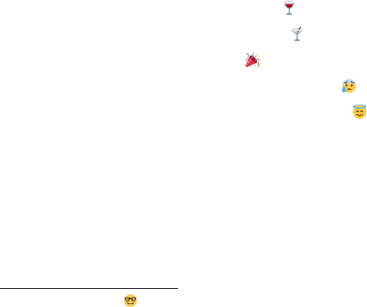
Another example: if you can’t write good code, you haven’t read this
book. Its contrapositive is if you read this book, you can write good
code. Both sentences say the same in different ways.
4
T B Be careful, saying “if the pool is warm, I’ll swim”
doesn’t mean I’ll only swim in warm water. The statement promises
nothing about cold pools. In other words, A → B doesn’t mean
B → A. To express both conditionals, use the biconditional:
A ↔ B : I’ll swim if and only if the pool is warm.
Here, the pool being warm is equivalent to me swimming: knowing
about the pool means knowing if I’ll swim and vice-versa. Again,
beware of the inverse error: never presume B → A follows
from A → B.
A, O, E O These logical operators are the most famous,
as they’re often explicitly coded. AND expresses all ideas are True;
OR expresses any idea is True; XOR expresses ideas are of opposing
truths. Imagine a party serving vodka and wine:
A : You drank wine.
B : You drank vodka.
A OR B : You drank.
A AND B : You drank mixing drinks.
A XOR B : You drank without mixing.
Make sure you understand how the operators we’ve seen so far
work. The following table recaps all possible combinations for two
variables. Notice how A → B is equivalent to !A OR B, and
A
XOR
B
is equivalent to
!
(
A
↔
B
)
.
4
And
by the way,
they’re both actually true.

A B
A B !A A → B A ↔ B A AND B A OR B A XOR B
As elementary algebra simplifies numerical expressions, boolean
algebra
5
simplifies logical expressions.
A Parentheses are irrelevant for sequences of AND or
OR operations. As sequences of sums or multiplications in elemen-
tary algebra, they can be calculated in any order.
A AND (B AND C) = (A AND B) AND C.
A OR (B OR C) = (A OR B) OR C.
D In elementary algebra we factor multiplicative
terms from sums: a × (b + c) = (a × b) + (a × c) . Likewise
in logic, ANDing after an OR is equivalent to ORing results of ANDs,
and vice versa:
A AND (B OR C) = (A AND B) OR (A AND C).
A OR (B AND C) = (A OR B) AND (A OR C).
DM’ 4
6
It can’t be summer
and
winter at once, so it’s ei-
ther not summer or not winter. And it’s not summer and not winter
if and only if it’s not the case it’s either summer or winter. Following
this reasoning, ANDs can be transformed into ORs and vice versa:
5
After George Boole. His 1854 book joined logic and math, starting all this.
6
De Morgan was friends with Boole. He tutored the young Ada Lovelace, who
became the first programmer a century before the first computer was constructed.
!(A AND B) = !A OR !B,
!A AND !B = !(A OR B).
These rules transform logical models, reveal properties, and sim-
plify expressions. Let’s solve a problem:
A server crashes if it’s overheating while
the air conditioning is off. It also crashes if it’s overheating
and its chassis cooler fails. In which conditions does the
server work?
Modeling it in logical variables, the conditions for the server to
crash can be stated in a single expression:
A : Server overheats.
B : Air conditioning off.
C : Chassis cooler fails.
D : Server crashes.
(A AND B) OR (A AND C) → D.
Using distributivity, we factorize the expression:
A AND (B OR C) → D.
The server works when (!D). The contrapositive reads:
!D → !(A AND (B OR C)).
We use DeMorgan’s Law to remove parentheses:
!D → !A OR !(B OR C).
Applying DeMorgan’s Law again,
!D → !A OR (!B AND !C).
This expression tells us that whenever the server works, either !A
(it’s not overheating), or !B AND !C (both air conditioning and
chassis cooler are working).
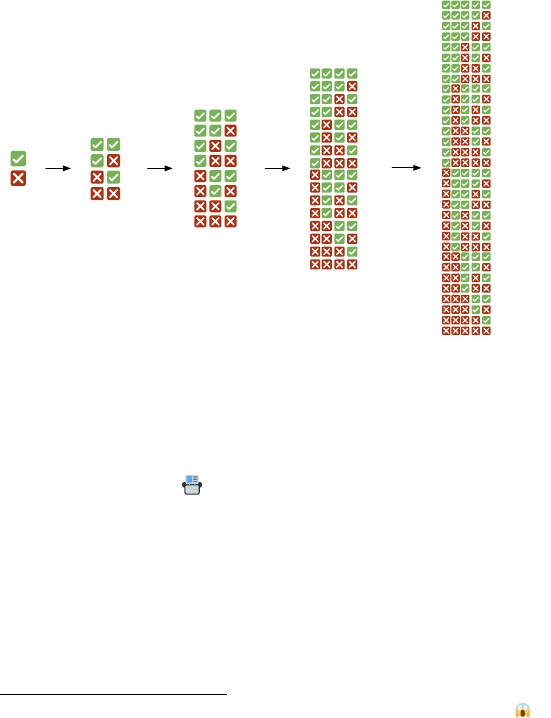
Another way to analyze logical models is checking what happens
in all possible configurations of its variables. A truth table has a
column for each variable. Rows represent possible combinations
of variable states.
One variable requires two rows: in one the variable is set True,
in the other False. To add a variable, we duplicate the rows. We
set the new variable True in the original rows, and False in the
duplicated rows (fig. 1.5). The truth table size doubles for each
added variable, so it can only be constructed for a few variables.
7
V
1
V
2
V
1
V
2
V
1
V
3
...
V
2
V
1
V
3
V
4
Let’s see how a truth table can be used to analyze a problem.
We have to create a database system
with the following requirements:
I : If the database is locked, we can save data.
II : A database lock on a full write queue cannot happen.
III : Either the write queue is full, or the cache is loaded.
IV : If the cache is loaded, the database cannot be locked.
Is this possible? Under which conditions will it work?
7
A
truth table for 30 variables would have more than a billion rows.
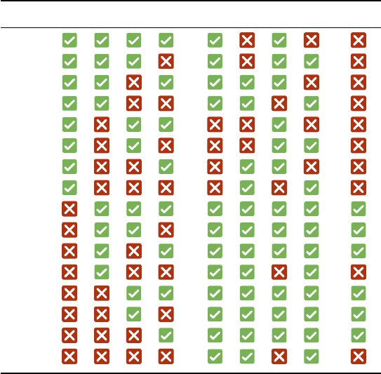
First we transform each requirement into a logical expression. This
database system can be modeled using four variables:
A : Database is locked.
B : Able to save data.
C : Write queue is full.
D : Cache is loaded.
I : A → B.
II : !(A AND C).
III : C OR D.
IV : D → !A.
We then create a truth table with all possible configurations. Extra
columns are added to check the requirements.
State # A B C D I II III IV All four
1
2
3
4
5
6
7
8
9
10
11
12
13
14
15
16
All requirements are met in states 9–11 and 13–15. In these states,
A = False,
meaning the database can’t ever be locked. Notice
the cache will not be loaded only in states 10 and 14.
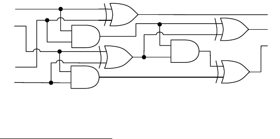
To test what you’ve learned, solve the Zebra Puzzle.
8
It’s a
famous logic problem wrongly attributed to Einstein. They say only
2% of people can solve it, but I doubt that. Using a big truth table
and correctly simplifying and combining logic statements, I’m sure
you’ll crack it.
Whenever you’re dealing with things that assume one of two
possibilities, remember they can be modeled as logic variables. This
way, it’s easy to derive expressions, simplify them, and draw conclu-
sions. Let’s now see the most impressive application of logic: the
design of electronic computers.
Groups of logical variables can represent numbers in binary form.
9
Logic operations on binary digits can be combined to perform gen-
eral calculations. Logic gates perform logic operations on electric
current. They are used in electrical circuits that can perform calcu-
lations at very high speeds.
A logic gate receives values through input wires, performs its
operation, and places the result on its output wire. There are AND
gates, OR gates, XOR gates, and more. True and False are repre-
sented by electric currents with high or low voltage. Using gates,
complex logical expressions can be computed near instantly. For
example, this electrical circuit sums two numbers:
XOR
AND
XOR
AND
XOR
AND
A
0
A
1
B
0
B
1
S
0
S
1
S
2
XOR
A
1
A
0
B
1
B
0
S
2
S
1
S
0
8
http://code.energy/zebra-puzzle.
9
True = 1, False = 0. If you have no idea why in binary represents
the number 5, check Appendix I for an explanation of number systems.
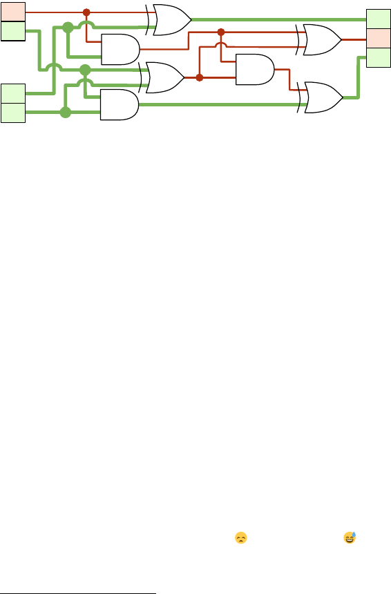
Let’s see how this circuit works. Take a minute to follow the oper-
ations performed by the circuit to realize how the magic happens:
XOR
AND
XOR
AND
XOR
1
1
0
1
1
0
1
AND
XOR
2 + 3 = 5
To take advantage of this fast form of computing, we transform
numerical problems to their binary/logical form. Truth tables help
model and test circuits. Boolean algebra simplifies expressions and
thus simplifies circuits.
At first, gates were made with bulky, inefficient and expensive
electrical valves. Once valves were replaced with transistors, logic
gates could be produced en masse. And we kept discovering ways
to make transistors smaller and smaller.
10
The working principles
of the modern CPU are still based on boolean algebra. A modern
CPU is just a circuit of millions of microscopic wires and logic gates
that manipulate electric currents of information.
It’s important to count things correctly—you’ll have to do it many
times when working with computational problems.
11
The math in
this section will be more complex, but don’t be scared. Some people
think they can’t be good coders because they think they’re bad at
math. Well, I failed high school math , yet here I am . The
math that makes a good coder is not what’s required in typical math
exams from schools.
10
In 2016, researchers created working transistors on a 1 nm scale. For refer-
ence, a gold atom is 0.15 nm wide.
11
Counting and Logic belong to an important field to computer science called
Discrete Mathematics.
Outside school, formulas and step-by-step procedures aren’t
memorized. They are looked up on the Internet when needed. Cal-
culations mustn’t be in pen and paper. What a good coder requires
is intuition. Learning about counting problems will strengthen that
intuition. Let’s now grind through a bunch of tools step by step:
multiplications, permutations, combinations and sums.
If an event happens in n different ways, and a another event hap-
pens in m different ways, the number of different ways both events
can happen is n × m. For example:
A PIN code is composed of two
digits and a letter. It takes one second to try a PIN. In the
worst case, how much time do we need to crack a PIN?
Two digits can be chosen in 100 ways (00-99) and a letter in 26
ways (A-Z). Therefore, there are 100 × 26 = 2, 600 possible PINs.
In the worst case, we have to try every single PIN until we find the
right one. After 2,600 seconds (43 minutes), we’ll have cracked it.
There are 23 candidates who want
to join your team. For each candidate, you toss a coin and
only hire if it shows heads. How many team configurations
are possible?
Before hiring, the only possible team configuration is you alone.
Each coin toss then doubles the number of possible configurations.
This has to be done 23 times, so we compute 2 to the power 23:
2 × 2 × · · · × 2
23
times
= 2
23
= 8, 388, 608 team configurations.
Note that one of these configurations is still you alone.
If we have n items, we can order them in n factorial (n!) different
ways. The factorial is explosive, it gets to enormous numbers for
small values of n. If you are not familiar,
n! = n × (n − 1) × (n − 2) × · · · × 2 × 1.
It’s easy to see n! is the number of ways n items can be ordered. In
how many ways can you choose a first item among n? After the first
item was chosen, in how many ways can you choose a second one?
Afterwards, how many options are left for a third? Think about it,
then we’ll move on to more examples.
12
Your truck company delivers to
15 cities. You want to know in what order to serve these
cities to minimize gas consumption. If it takes a microsec-
ond to calculate the length of one route, how long does it
take to compute the length of all possible routes?
Each permutation of the 15 cities is a different route. The factorial
is the number of distinct permutations, so there are 15! = 15 ×
14 × · · · × 1 ≈ 1.3 trillion routes. That in microseconds is roughly
equivalent to 15 days. If instead you had 20 cities, it would take
77 thousand years.
A musician is studying a scale
with 13 different notes. She wants you to render all possi-
ble melodies that use six notes only. Each note should play
once per melody, and each six-note melody should play for
one second. How much audio runtime is she asking for?
We want to count permutations of six out of the 13 notes. To ignore
permutations of unused notes, we must stop developing the facto-
rial after the sixth factor. Formally, n!/(n − m) ! is the number of
possible permutations of m out of n possible items. In our case:
12
By
convention, 0! = 1. We say there’s one way to order zero items.
13!
(13 − 6)!
=
13 × 12 × 11 × 10 × 9 × 8 × 7!
7!
= 13 × 12 × 11 × 10 × 9 × 8
6 factors
= 1, 235, 520 melodies.
That’s over 1.2 million one-second melodies—it would take 343
hours to listen to everything. Better convince the musician to find
the perfect melody some other way.
The factorial n! overcounts the number of ways to order n items
if some are identical. Identical items swapping their positions
shouldn’t count as a different permutation.
In a sequence of n items of which r are identical, there are r!
ways to reorder identical items. Thus, n! counts each distinct per-
mutation r! times. To get the number of distinct permutations, we
need to divide n! by this overcount factor. For instance, the number
of distinct permutations of the letters “COD
E ENERGY” is 10!/3!.
A biologist is studying a DNA seg-
ment related to a genetic disease. The segment is made
of 23 base pairs, where 9 must be A-T, 14 must be G-C.
She wants to run a simulation task on every possible DNA
segment having these numbers of base pairs. How many
simulation tasks is she looking at?
First we calculate all possible permutations of the 23 base pairs.
Then we divide the result to account for the 9 repeated A-T and
the 14 repeated G-C base pairs:
23!/(9! × 14!) = 817, 190 base pair permutations.
But the problem isn’t over. Considering orientation of base pairs:
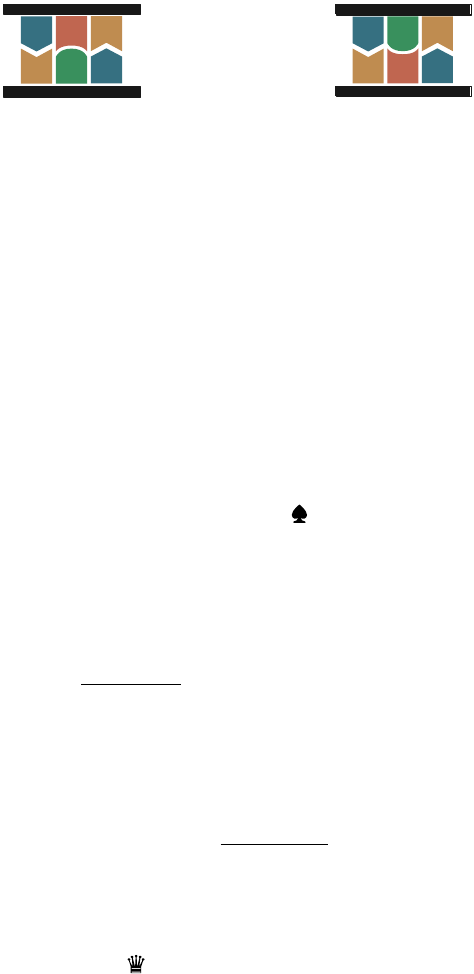
A
T C
G
A
T
isn’t the same as
A
T
C
G
A
T
For each sequence of 23 base pairs, there are 2
23
distinct orienta-
tion configurations. Therefore, the total is:
817, 190 × 2
23
≈ 7 trillion sequences.
And that’s for a tiny 23 base pair sequence with a known distribu-
tion. The smallest replicable DNA known so far are from the minus-
cule Porcine circovirus, and it has 1,800 base pairs! DNA code and
life are truly amazing from a technological point of view. It’s crazy:
human DNA has about 3 billion base pairs, replicated in each of the
3 trillion cells of the human body.
Picture a deck of 13 cards containing all spades. How many ways
can you deal six cards to your opponent? We’ve seen 13!/(13 −
6)! is the number of permutations of six out of 13 possible items.
Since the order of the six cards doesn’t matter, we must divide this
by 6! to obtain:
13!
6!(13 − 6)!
= 1, 716 combinations.
The binomial
n
m
is the number of ways to select m items out of
a set of n items, regardless of order:
n
m
=
n!
m!(n − m)!
.
The binomial is read “n choose m”.
You have an empty chessboard and 8
queens,
which can be placed anywhere on the board. In
how many different ways can the queens be placed?
The chessboard has 64 squares in an 8×8 grid. The number of ways
to choose 8 squares out of the available 64 is
64
8
≈ 4.4 billion.
13
Calculating sums of sequences occurs often when counting. Sequen-
tial sums are expressed using the capital-sigma (Σ) notation. It
indicates how an expression will be summed for each value of i:
finish i
start i
expression of i.
For instance, summing the first five odd numbers is written:
4
i=0
(2i + 1) = 1 + 3 + 5 + 7 + 9.
Note i was replaced by each number between 0 and 4 to obtain 1,
3, 5, 7 and 9. Summing the first n natural numbers is thus:
n
i=1
i = 1 + 2 + · · · + (n − 1) + n.
When the prodigious mathematician Gauss was ten years old, he
got tired of summing natural numbers one by one and found this
neat trick:
n
i=1
i =
n(n + 1)
2
.
Can you guess how Gauss discovered this? The trick is explained
in Appendix II. Let’s see how we can use it to solve a problem:
You need to fly to New York City any-
time in the next 30 days. Air ticket prices change unpre-
dictably according to the departure and return dates. How
many pairs of days must be checked to find the cheapest
tickets for flying to NYC and back within the next 30 days?
13
Pro
tip: Google choose for the result.
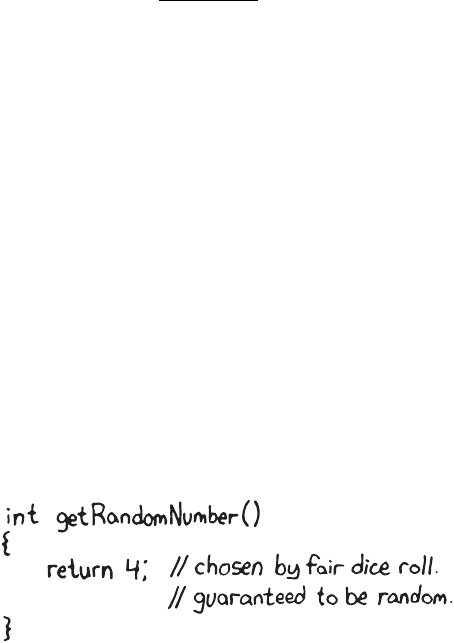
Any pair of days between today (day 1) and the last day (day 30)
is valid, as long as the return is the same day of later than the de-
parture. Hence, 30 pairs begin with day 1, 29 pairs begin with
day 2, 28 with day 3, and so on. There’s only one pair that be-
gins on day 30. So 30+29+…+2+1 is the total number of pairs
that needs to be considered. We can write this
30
i=1
i and use
our handy formula:
30
i=1
i =
30(30 + 1)
2
= 465 pairs.
Also, we can solve this using combinations. From the 30 days avail-
able, pick two. The order doesn’t matter: the earlier day is the
departure, the later day is the return. This gives
30
2
= 435. But
wait! We must count the cases where arrival and departure are the
same date. There are 30 such cases, thus
30
2
+ 30 = 465.
The principles of randomness will help you understand gambling,
forecast the weather, or design a backup system with low risk of fail-
ure. The principles are simple, yet misunderstood by most people.
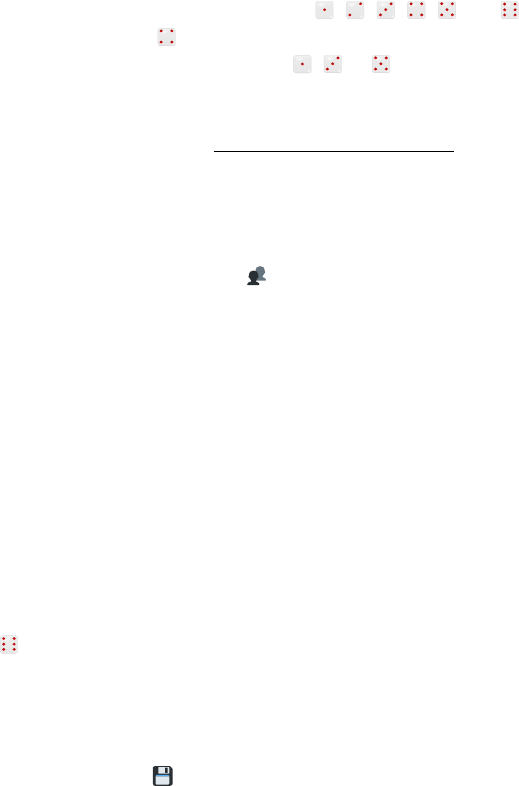
Let’s start using our counting skills to compute odds. Then we’ll
learn how different event types are used to solve problems. Finally,
we’ll see why gamblers lose everything.
A die roll has six possible outcomes: , , , , and . The
chances of getting are thus 1/6. How about getting an odd num-
ber? It can happen in three ways ( , or ), so the chances are
3/6 = 1/2. Formally, the probability of an event to occur is:
P (event) =
# of ways event can happen
# of possible outcomes
.
This works because each possible outcome is equally likely to hap-
pen: the die is well balanced and the thrower isn’t cheating.
There are 23 candidates who
want to join your team. For each candidate, you toss a coin
and only hire if it shows heads. What are the chances of
hiring nobody?
We’ve seen there are 2
23
= 8, 388, 608 possible team configu-
rations. The only way to hire nobody is by tossing 23 consecu-
tive tails. The probability of that happening is thus P (nobody) =
1/8, 388, 608. To put things into perspective, the probability that a
given commercial airline flight crashes is about one in five million.
If you toss a coin and roll a die, the chance of getting heads and
is 1/2 × 1/6 = 1/12 ≈ 0.08, or 8%. When the outcome
of an event does not influence the outcome of another event, they
are independent. The probability that two independent events will
happen is the product of their individual probabilities.
You need to store data for a year. One
disk
has a probability of failing of one in a billion. Another
disk costs 20% the price but has a probability of failing of
one in two thousand. What should you buy?
If you use three cheap disks, you only lose the data if all three
disks fail. The probability of that happening is (1/2, 000)
3
=
1/8, 000, 000, 000. This redundancy achieves a lower risk of data
loss than the expensive disk, while costing only 60% the price.
A die roll cannot simultaneously yield and an odd number. The
probability to get either or an odd number is thus 1/6 + 1/2 =
2/3. When two events cannot happen simultaneously, they are mu-
tually exclusive. If you need any of the mutually exclusive events
to happen, just sum their individual probabilities.
Your website offers three plans:
free, basic, or pro. You know a random new customer has
a probability of 70% of choosing the free plan, 20% for the
basic, and 10% for the pro. What are the chances a new
user will sign up for a paying plan?
The events are mutually exclusive: a user can’t choose both the
basic and pro plans at the same time. The probability the user will
pay is 0.2 + 0.1 = 0.3.
A die roll cannot simultaneously yield a multiple of three ( , )
and a number not divisible by three, but it must yield one of them.
The probability to get a multiple of three is 2/6 = 1/3, so the
probability to get a number not divisible by three is 1 − 1/3 = 2/3.
When two mutually exclusive events cover all possible outcomes,
they are complementary. The sum of individual probabilities of
complementary events is thus 100%.
Your castle is defended by five
towers.
Each tower has a 20% probability of disabling an
invader before he reaches the gate. What are the chances
of stopping him?
There’s 0.2 + 0.2 + 0.2 + 0.2 + 0.2 = 1, or a 100% chance of
hitting the enemy, right? Wrong! Never sum the probabilities of
independent events, that’s a common mistake. Use complementary
events twice:
• The 20% chance of hitting is complementary to the
80% chance of missing. The probability that all towers
miss is: 0.8
5
≈ 0.33.
• The event “all towers miss” is complementary to “at
least one tower hits”. The probability of stopping the
enemy is: 1 − 0.33 = 0.67.
If you flip a normal coin ten times, and you get ten heads, then
on the 11
th
flip, are you more likely to get a tail? Or, by playing
the lottery with the numbers 1 to 6, are you less likely to win than
playing with more evenly spaced numbers?
Don’t be a victim of the gambler’s fallacy. Past events never
affect the outcome of an independent event. Never. Ever. In a
truly random lottery drawing, the chances of any specific numbers
being chosen is the same as any other. There’s no “hidden law”
that forces numbers that weren’t frequently chosen in the past to
be chosen more often in the future.
There’s far more to probability than we can cover here. Always
remember to look for more tools when tackling complex problems.
For example:
There are 23 can-
didates who want to join your team. For each candidate,
you toss a coin and only hire if it shows heads. What are
the chances of hiring seven people or less?
Yes, this is hard. Googling around will eventually lead you to the
“binomial distribution”. You can visualize this on Wolfram Alpha
14
by typing: B,/ <= .
14
http://wolframalpha.com
.
In this chapter, we’ve seen things that are intimately related to prob-
lem solving, but do not involve any actual coding. Section 1.1
explains why and how we should write things down. We create
models for our problems, and use conceptual tools on the models
we create. Section 1.2 provides a toolbox for handling logic, with
boolean algebra and truth tables.
Section 1.3 shows the importance of counting possibilities and
configurations of various problems. A quick back-of-the-envelope
calculation can show you if a computation will be straightforward
or fruitless. Novice programmers often lose time analyzing way
too many scenarios. Finally, section 1.4 explains the basic rules of
counting odds. Probability is very useful when developing solutions
that must interact with our wonderful but uncertain world.
With this, we’ve outlined many important aspects of what aca-
demics call Discrete Mathematics. Many more fun theorems can be
picked up from the references below or navigating Wikipedia. For
instance, you can use the “Pigeonhole Principle” to prove at least
two people in New York City have exactly the same number of hairs!
Some of what we learned here will be especially relevant in
the next chapter, where we’ll discover perhaps the most important
aspect of computer science.
• Discrete Mathematics and its Applications, 7
th
Edition
– Get it at https://code.energy/rosen
• Prof. Jeannette Wing’s slides on computational thinking
– Get it at https://code.energy/wing
In almost every computation, a variety of arrangements
for the processes is possible. It is essential to choose
that arrangement which shall tend to minimize the
time necessary for the calculation.
does it take to sort 26 shuffled cards? If
instead you had 52 cards, would it take twice as long?
How much longer would it take for a thousand decks of
cards? The answer is intrinsic to the method used to sort the cards.
A method is a list of unambiguous instructions for achieving a
goal. A method that always requires a finite series of operations
is called an algorithm. For instance, a card-sorting algorithm is a
method that will always specify some operations to sort a deck of
26 cards per suit and per rank.
Less operations need less computing power. We like fast so-
lutions, so we monitor the number of operations in our algorithms.
Many algorithms require a fast-growing number of operations when
the input grows in size. For example, our card-sorting algorithm
could take few operations to sort 26 cards, but four times more
operations to sort 52 cards!
To avoid bad surprises when our problem size grows, we find
the algorithm’s time complexity. In this chapter, you’ll learn to:
Count and interpret time complexities,
Express their growth with fancy Big-O’s,
Run away from exponential algorithms,
Make sure you have enough computer memory.
But
first, how do we define time complexity?
25
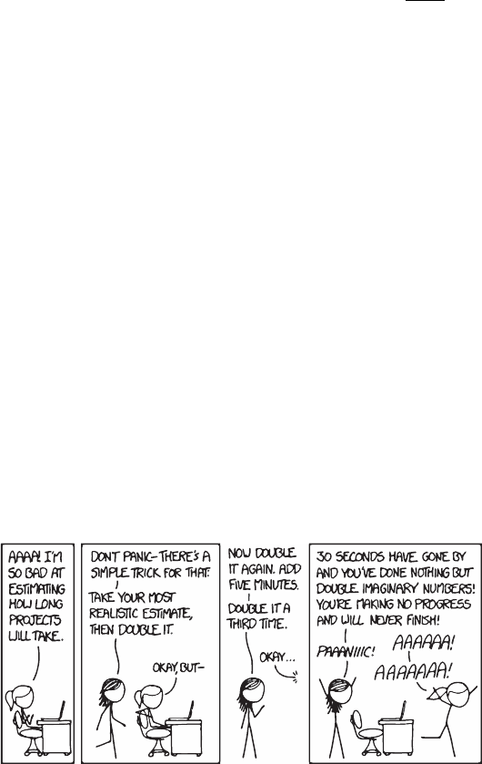
Time complexity is written T(n). It gives the number of oper-
ations the algorithm performs when processing an input of size n.
We also refer to an algorithm’s T(n) as its running cost. If our card-
sorting algorithm follows T(n) = n
2
, we can predict how much
longer it takes to sort a deck once we double its size:
T(2n)
T(n)
= 4.
Isn’t it faster to sort a pile of cards that’s almost sorted already?
Input size isn’t the only characteristic that impacts the number of
operations required by an algorithm. When an algorithm can have
different values of T(n) for the same value of n, we resort to cases:
• when the input requires the minimum number of
operations for any input of that size. In sorting, it happens
when the input is already sorted.
• when the input requires the maximum num-
ber of operations for any input of that size. In many sorting
algorithms, that’s when the input was given in reverse order.
• refers to the average number of operations
required for typical inputs of that size. For sorting, an input
in random order is usually considered.
In general, the most important is the worst case. From there, you
get a guaranteed baseline you can always count on. When nothing
is said about the scenario, the worst case is assumed. Next, we’ll
see how to analyze a worst case scenario, hands on.
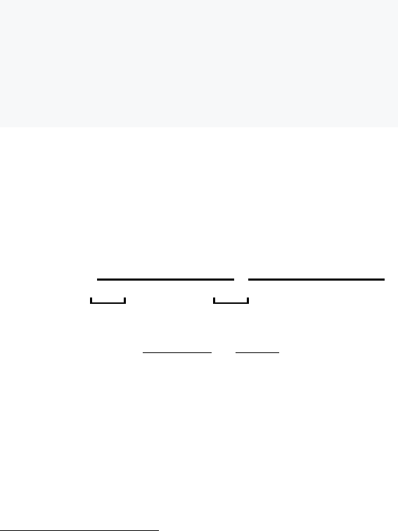
We find the time complexity of an algorithm by counting the num-
ber of basic operations it requires for a hypothetical input of size n.
We’ll demonstrate it with Selection Sort, a sorting algorithm that
uses a nested loop. An outer for loop updates the current position
being sorted, and an inner for loop selects the item that goes in
the current position:
1
function selection_sortlist
for current ← … list.length -
smallest ← current
for i ← current + … list.length
if list[i] < list[smallest]
smallest ← i
list.swap_itemscurrent, smallest
Let’s see what happens with a list of n items, assuming the worst
case. The outer loop runs n − 1 times and does two operations
per run (one assignment and one swap) totaling 2n − 2 operations.
The inner loop first runs n− 1 times, then n − 2 times, n − 3 times,
and so on. We know how to sum these types of sequences:
2
# of inner
loop runs
=
n−1 total runs of the outer loop.
n − 1
1
st
pass of outer loop
+ n − 2
2
nd
pass of outer loop
+ · · · + 2 + 1
=
n−1
i=1
i =
(n − 1)(n)
2
=
n
2
− n
2
.
In the worst case, the if condition is always met. This means the
inner loop does one comparison and one assignment (n
2
− n)/2
times, hence n
2
−n operations. In total, the algorithm costs 2n−2
operations for the outer loop, plus n
2
− n operations for the inner
loop. We thus get the time complexity:
T(n) = n
2
+ n − 2.
1
To
understand an new algorithm, run it on paper with a small sample input.
2
From sec. 1.3,
∑
n
i=1
i = n(n + 1)/2.
Now what? If our list size was n = 8 and we double it, the sorting
time will be multiplied by:
T(16)
T(8)
=
16
2
+ 16 − 2
8
2
+ 8 − 2
≈ 3.86.
If we double it again we will multiply time by 3.90. Double it over
and over and find 3.94, 3.97, 3.98. Notice how this gets closer and
closer to 4? This means it would take four times as long to sort two
million items than to sort one million items.
Say the input size of an algorithm is very large, and we increase it
even more. To predict how the execution time will grow, we don’t
need to know all terms of T(n). We can approximate T(n) by its
fastest-growing term, called the dominant term.
Yesterday, you knocked over one box of
index cards. It took you two hours of Selection Sort to fix
it. Today, you spilled ten boxes. How much time will you
need to arrange the cards back in?
We’ve seen Selection Sort follows T(n) = n
2
+ n − 2. The fastest-
growing term is n
2
, therefore we can write T(n) ≈ n
2
. Assuming
there are n cards per box, we find:
T(10n)
T(n)
≈
(10n)
2
n
2
= 100.
It will take you approximately 100×(2 hours) = 200 hours! What
if we had used a different sorting method? For example, there’s
one called “Bubble Sort” whose time complexity is T(n) = 0.5n
2
+
0.5n. The fastest-growing term then gives T(n) ≈ 0.5n
2
, hence:
T(10n)
T(n)
≈
0.5 × (
10n)
2
0.5 × n
2
=
100.
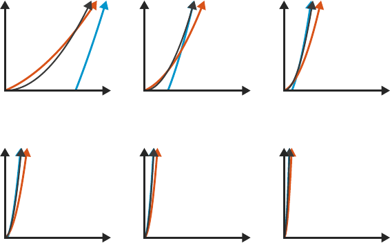
n
2
n
2
+ n − 2 0.5n
2
+ 0.5n
n
The 0.5 coefficient cancels itself out! The idea that n
2
− n − 2
and 0.5n
2
+ 0.5n both grow like n
2
isn’t easy to get. How does
the fastest-growing term of a function ignore all other numbers and
dominate growth? Let’s try to visually understand this.
In fig. 2.2, the two time complexities we’ve seen are compared
to n
2
at different zoom levels. As we plot them for larger and larger
values of n, their curves seem to get closer and closer. Actually, you
can plug any numbers into the bullets of T(n) = • n
2
+ • n + •,
and it will still grow like
n
2
.
Remember, this effect of curves getting closer works if the
fastest-growing term is the same. The plot of a function with a lin-
ear growth (n) never gets closer and closer to one with a quadratic
growth (n
2
), which in turn never gets closer and closer to one
having a cubic growth (n
3
).
That’s why with very big inputs, algorithms with a quadratically
growing cost perform a lot worse than algorithms with a linear cost.
However they perform a lot better than those with a cubic cost. If
you’ve understood this, the next section will be easy: we will just
learn the fancy notation coders use to express this.
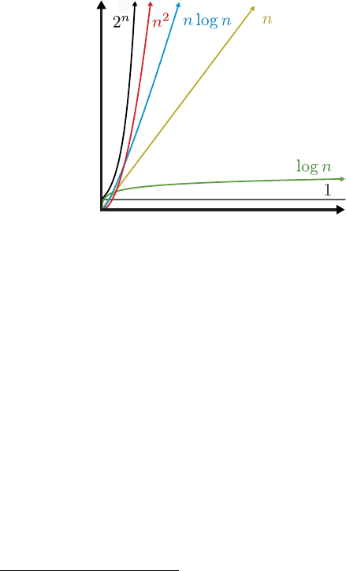
There’s a special notation to refer to classes of growth: the Big-O
notation. A function with a fastest-growing term of 2
n
or weaker is
O(2
n
); one with a quadratic or weaker growth is O(n
2
); growing
linearly or less, O(n), and so on. The notation is used for expressing
the dominant term of algorithms’ cost functions in the worst case—
that’s the standard way of expressing time complexity.
3
O
Both Selection Sort and Bubble Sort are O(n
2
), but we’ll soon dis-
cover O(n log n) algorithms that do the same job. With our O(n
2
)
algorithms, 10× the input size resulted in 100× the running cost.
Using a O(n log n) algorithm, 10× the input size results in only
10 log 10 ≈ 34× the running cost.
When n is a million, n
2
is a trillion, whereas n log n is just a few
million. Years running a quadratic algorithm on a large input could
be equivalent to minutes if a O(n log n) algorithm was used. That’s
why you need time complexity analysis when you design systems
that handle very large inputs.
When designing a computational system, it’s important to an-
ticipate the most frequent operations. Then you can compare the
Big-O costs of different algorithms that do these operations.
4
Also,
3
We say ‘oh’, e.g., “that sorting algorithm is oh-n-squared”.
4
For the Big-O complexities of most algorithms that do common tasks, see
http://code.energy/bigo.
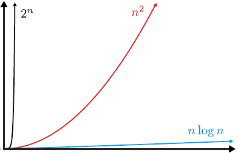
most algorithms only work with specific input structures. If you
choose your algorithms in advance, you can structure your input
data accordingly.
Some algorithms always run for a constant duration regardless
of input size—they’re O(1). For example, checking if a number
is odd or even: we see if its last digit is odd and boom, problem
solved. No matter how big the number. We’ll see more O(1) al-
gorithms in the next chapters. They’re amazing, but first let’s see
which algorithms are not amazing.
We say O(2
n
) algorithms are exponential time. From the graph of
growth orders (fig. 2.3), it doesn’t seem the quadratic n
2
and the
exponential
2
n
are much different. Zooming out the graph, it’s ob-
vious the exponential growth brutally dominates the quadratic one:
Exponential time grows so much, we consider these algorithms “not
runnable”. They run for very few input types, and require huge
amounts of computing power if inputs aren’t tiny. Optimizing ev-
ery aspect of the code or using supercomputers doesn’t help. The
crushing exponential always dominates growth and keeps these al-
gorithms unviable.
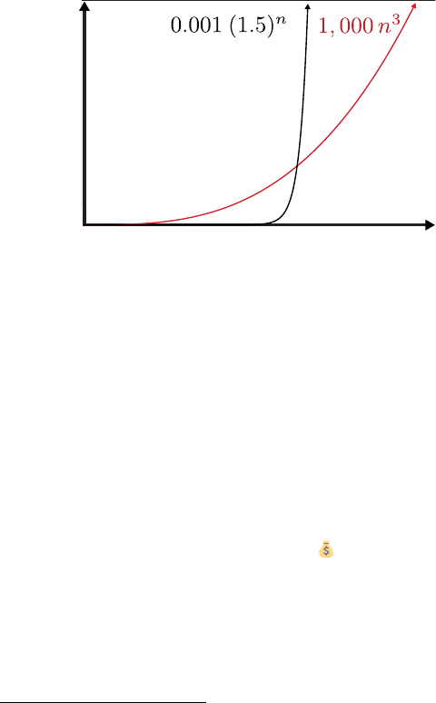
To illustrate the explosiveness of exponential growth, let’s
zoom out the graph even more and change the numbers (fig. 2.5).
The exponential was reduced in power (from 2 to 1.5) and had its
growth divided by a thousand. The polynomial had its exponent
increased (from 2 to 3) and its growth multiplied by a thousand.
n log n
Some algorithms are even worse than exponential time algorithms.
It’s the case of factorial time algorithms, whose time complexities
are O(n!). Exponential and factorial time algorithms are horrible,
but we need them for the hardest computational problems: the fa-
mous NP-complete problems. We will see important examples of
NP-complete problems in the next chapter. For now, remember
this: the first person to find a non-exponential algorithm to a NP-
complete problem gets a million dollars
5
from the Clay Mathe-
matics Institute.
It’s important to recognize the class of problem you’re dealing
with. If it’s known to be NP-complete, trying to find an optimal
solution is fighting the impossible. Unless you’re shooting for that
million dollars.
5
It has been proven a non-exponential algorithm for any NP-complete prob-
lem could be generalized to all NP-complete problems. Since we don’t know if
such an algorithm exists, you also get a million dollars if you prove an NP-complete
problem cannot be solved by non-exponential algorithms!
Even if we could perform operations infinitely fast, there would still
be a limit to our computing power. During execution, algorithms
need working storage to keep track of their ongoing calculations.
This consumes computer memory, which is not infinite.
The measure for the working storage an algorithm needs is
called space complexity. Space complexity analysis is similar to
time complexity analysis. The difference is that we count computer
memory, and not computing operations. We observe how space
complexity evolves when the algorithm’s input size grows, just as
we do for time complexity.
For example, Selection Sort (sec. 2.1) just needs working stor-
age for a fixed set of variables. The number of variables does not
depend on the input size. Therefore, we say Selection Sort’s space
complexity is O(1): no matter what the input size, it requires the
same amount of computer memory for working storage.
However, many other algorithms need working storage that
grows with input size. Sometimes, it’s impossible to meet an al-
gorithm’s memory requirements. You won’t find an appropriate
sorting algorithm with O(n log n) time complexity and O(1) space
complexity. Computer memory limitations sometimes force a trade-
off. With low memory, you’ll probably need an algorithm with slow
O(n
2
) time complexity because it has O(1) space complexity. In
future chapters, we’ll see how clever data handling can improve
space complexity.
In this chapter, we learned algorithms can have different types of vo-
racity for consuming computing time and computer memory. We’ve
seen how to assess it with time and space complexity analysis. We
learned to calculate time complexity by finding the exact T(n) func-
tion, the number of operations performed by an algorithm.
We’ve seen how to express time complexity using the Big-O no-
tation (O). Throughout this book, we’ll perform simple time com-
plexity analysis of algorithms using this notation. Many times, cal-
culating T(n) is not necessary for inferring the Big-O complexity
of an algorithm. We’ll see easier ways to calculate complexity in
the next chapter.
We’ve seen the cost of running exponential algorithms explode
in a way that makes these algorithms not runnable for big inputs.
And we learned how to answer these questions:
• Given different algorithms, do they have a significant differ-
ence in terms of operations required to run?
• Multiplying the input size by a constant, what happens with
the time an algorithm takes to run?
• Would an algorithm perform a reasonable number of opera-
tions once the size of the input grows?
• If an algorithm is too slow for running on an input of a given
size, would optimizing the algorithm, or using a supercom-
puter help?
In the next chapter, we’ll focus on exploring how strategies under-
lying the design of algorithms are related to their time complexity.
• The Art of Computer Programming, Vol. 1, by Knuth
– Get it at https://code.energy/knuth
• The Computational Complexity Zoo, by hackerdashery
– Watch it at https://code.energy/pnp
If you find a good move, look for a better one.
who use sound strategy to
achieve grand results. Excelling at problem solving re-
quires being a good strategist. This chapter covers the
main strategies for algorithm design. You will learn to:
Handle repetitive tasks through iteration,
Iterate elegantly using recursion,
Use brute force when you’re lazy but powerful,
Test bad options and then backtrack,
Save time with heuristics for a reasonable way out,
Divide and conquer your toughest opponents,
Identify old issues dynamically not to waste energy again,
Bound your problem so the solution doesn’t escape.
There are a lot of tools we will see here, but don’t worry. We’ll
start with simple problems and progressively build better solutions
as new techniques are uncovered. Soon enough, you will overcome
your computational problems with sound and eloquent solutions.
The iterative strategy consists in using loops (e.g. for, while)
to repeat a process until a condition is met. Each step in a loop
is called an iteration. It’s great for running through an input and
applying the same operations on every part of it. For example:
35
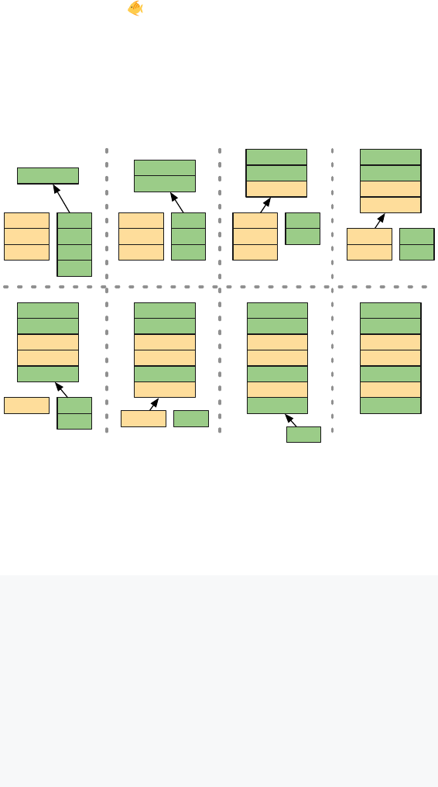
You’re given a list of saltwater fish and
a list of freshwater fish, both in alphabetical order. How do
you create a list featuring all the fish in alphabetical order?
We can iteratively compare the top items of the two lists as follows:
Cod
Herring
Marlin
Asp
Carp
Ide
Trout
Asp
Cod
Herring
Marlin
Asp
Carp
Carp
Ide
Trout
Cod
Asp
Carp
Ide
Trout
Cod
Herring
Marlin
Asp
Carp
Ide
Trout
Cod
Herring
Herring
Marlin
Asp
Carp
Ide
Trout
Cod
Herring
Marlin
Ide
Asp
Carp
Trout
Cod
Herring
Marlin
Ide
Marlin
Asp
Carp
Trout
Cod
Herring
Ide
Marlin
Trout
Asp
Carp
Cod
Herring
Ide
Marlin
Trout
The process can be written in a single while loop:
function mergesea, fresh
result ← List.new
while not sea.empty and fresh.empty
if sea.top_item > fresh.top_item
fish ← sea.remove_top_item
else
fish ← fresh.remove_top_item
result.appendfish
return result
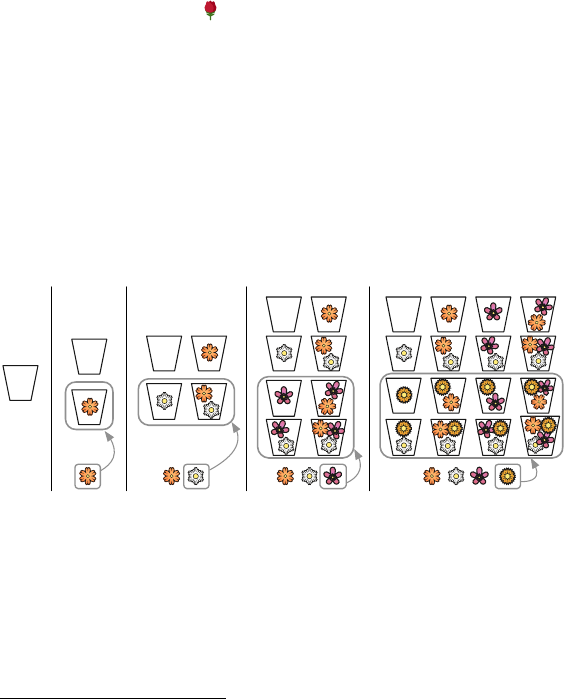
It loops over all names in the inputs, performing a fixed number of
operations for each name.
1
Hence the merge algorithm is O(n).
In the previous chapter, we’ve seem how selection_sort uses a
loop nested inside another one. Now we’ll learn how to use a nested
loop for computing power sets. Given a collection of objects S, the
power set of S is the set containing all subsets of S.
2
Floral fragrances are made combin-
ing scents from flowers. Given a set of flowers F , how do
you list all fragrances that can be made?
Any fragrance is made from a subset of F , so its power set contains
all possible fragrances. We can compute this power set iteratively.
For zero flowers only one fragrance is possible: the one having no
scent. For considering an additional flower, we duplicate the fra-
grances we already have, adding the new flower to the duplicated
fragrances. It’s easier to understand that visually:
The process can be described using loops. An outer loop keeps track
of the next flower to consider. An inner loop duplicates the fra-
grances, adding the current flower to the duplicates.
1
The input size is the number of items in both input lists combined. The
while loop does three operations for each of these items, hence T(n) = 3n.
2
See Appendix III if you need a better explanation of sets.

function power_setflowers
fragrances ← Set.new
fragrances.addSet.new
for each flower in flowers
new_fragrances ← copyfragrances
for each fragrance in new_fragrances
fragrance.addflower
fragrances ← fragrances + new_fragrances
return fragrances
A single extra flower causes fragrances to double in size, indicat-
ing exponential growth (2
k+1
= 2 × 2
k
). Algorithms that require
double the operations if the input size increases by a single item are
exponential, with O(2
n
) time complexity.
Generating power sets is equivalent to generating truth tables
(sec. 1.2). If we map each flower to a boolean variable, any fra-
grance is representable as True/False values of these variables.
In these variables’ truth table each row represents a possible fra-
grance formula.
We say there’s recursion when a function delegates work to clones
of itself. A recursive algorithm will naturally come to mind for
solving a problem defined in terms of itself. For example, take
the famous Fibonacci sequence. It starts with two ones, and
each subsequent number is the sum of the two previous numbers:
1, 1, 2, 3, 5, 8, 13, 21, … How do you code a function that returns
the n
th
Fibonnacci number?
function fibn
if n ≤
return
return fibn - + fibn -
Using recursion requires creativity for seeing how a problem can
be stated in terms of itself. Checking if a word is palindrome
3
is
3
Palindromes
are read backwards like they read normally, e.g., Ada, racecar.